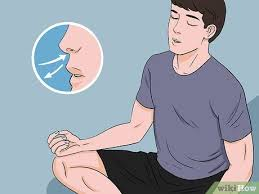
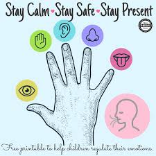
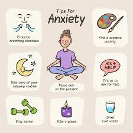

What is Mental Health?
Mental health encompasses emotional, psychological, and social well-being. It influences cognition, perception, and behavior. It also determines how an individual handles stress, interpersonal relationships, and decision-making.
Techniques to deal with anxiety & depression:
Tecnique #1 Breathing:
Let your breath flow as deep down into your belly as is comfortable, without forcing it. Try breathing in through your nose and out through your mouth. Breathe in gently and regularly. Some people find it helpful to count steadily from 1 to 5. You may not be able to reach 5 at first. Then, without pausing or holding your breath, let it flow out gently, counting from 1 to 5 again, if you find this helpful. Keep doing this for 3 to 5 minutes.

Tecnique #2 Progressive muscle relaxation:
Find a quiet location. Close your eyes and slowly tense and then relax each of your muscle groups from your toes to your head. Hold the tension for three seconds and then release quickly. This can help reduce the feelings of muscle tension that often comes with anxiety.

Benefits of techniques/therapies for anxiety
Therapy can help you uncover the underlying causes of your worries and fears; learn how to relax; look at situations in new, less frightening ways; and develop better coping and problem-solving skills.
